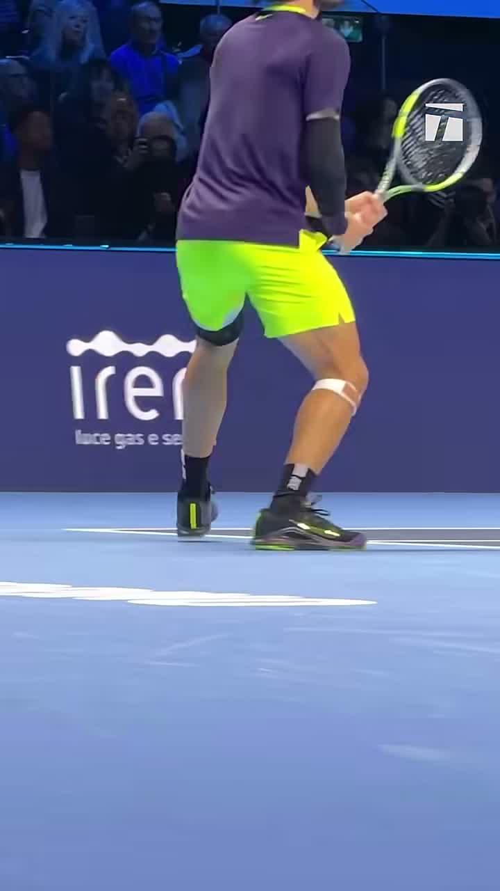
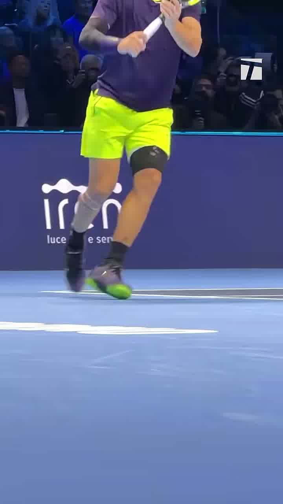

Xem reel tại đây — bản gốc, cắt phần chân, quay chậm
Tải về từ reel của Tennis Channel: 720×1280, 30 fps, 28,2 giây. Bản dựng xen kẽ các cảnh rally toàn cảnh với cận cảnh phần thân dưới — kiểu cắt “chân nhảy múa”, không phải một rally liên tục. Cả ba phiên bản đều phát trong trang và tải về được.

7 điều rút ra — chỉ về đôi chân
Split-step được căn theo thời điểm chạm bóng — nhưng tiếp đất sau đó
Các nguồn tin huấn luyện đồng ý rằng Alcaraz bắt đầu động tác tách chân khi bóng rời khỏi vợt của đối thủ. Tuy nhiên, những tay vợt trả giao bóng hàng đầu có tính toán lại bắt đầu di chuyển vào khoảng thời điểm tiếp xúc và tiếp đất 131–160 ms sau khi chạm bóng, khi có thông tin về quỹ đạo bay của bóng ở giai đoạn đầu. Gợi ý phổ biến “hạ cánh khi đối thủ đánh bóng” là một cách nói đơn giản hóa và mâu thuẫn với các phép đo nếu hiểu theo nghĩa đen. [DW Tennis; Navia và cộng sự 2022; Mecheri và cộng sự, 2019]
Bước đầu: bùng nổ, thấp, từ chân ngoài
Mỗi phân tích của huấn luyện viên đều mô tả cùng một hình ảnh — hông hạ thấp, đẩy mạnh bằng bàn chân bên ngoài, không do dự sau khi đọc tình huống. Nhưng không nguồn nào xác định kiểu bước đầu ưa dùng của anh (gravity, pivot hay jab), và tài liệu nói chung chia theo nhiệm vụ: gravity thắng ở bóng rộng phản xạ, jab thắng ở cú chạy đã biết hướng. [HoopsKing; DW Tennis; Bragg & Andriacchi 2001; Vuong và cộng sự]
Crossover trong phòng thủ — không “crabbing”
Nguồn thông tin cụ thể nhất về Alcaraz: khi phòng thủ ở góc trái tay trước những cú đánh tiếp cận, anh xoay hông và bước chân ngoài ngang qua đường thẳng của cơ thể, trong khi hầu hết các tay vợt khác di chuyển ngang bằng bước chân nhỏ với ngực hướng về lưới. Tác dụng được cho là: tiếp cận bóng nhanh hơn, duy trì xoay người, giữ thăng bằng để bùng nổ lao về phía trước sau một cú slice thấp. Mô hình chung là crossover ra ngoài, bước ngang trở lại. Tennis Whisperer; DW Tennis
Các bước điều chỉnh vi mô tạo điểm chạm bóng
“Các bước điều chỉnh nhanh chóng… các bước nhỏ chính xác đảm bảo anh ấy luôn ở vị trí hoàn hảo” (DW Tennis); trên sân đất nện, “một bước điều chỉnh siêu nhỏ, một bước giậm chân nửa inch trước khi tiếp xúc” giúp mặt vợt có thời gian (SportsOrca). Tất cả đều là thông tin định tính — không có số bước riêng của Alcaraz trong bất kỳ nguồn nào được tìm thấy. DW Tennis; SportsOrca; LetsPlayTennis UK
Cú thuận tay bật lên là kết quả, không phải một cú nhảy
Trên sân đất nện và sân cứng, những cú thuận tay rộng được đánh ở thế mở với chân phải đẩy mạnh đến mức anh rời khỏi mặt đất khi vung vợt, rồi [Hugh Clarke 2025; Robson/Yandell — cơ chế chung]
Sân cứng thì phanh; đất nện thì trượt
Cơ sinh học: trên sân cứng, các tay vợt phanh bằng cách gập đầu gối nhiều hơn; gập ít hơn giúp dễ trượt hơn trên sân đất nện. Alcaraz có thể trượt trên sân cứng — các bình luận viên khen ngợi điều này — nhưng không có nguồn nào định lượng tần suất anh thực hiện, và các nhà phân tích không đồng ý về việc liệu việc trượt có phải là yếu tố cốt lõi trong lối chơi trên sân cứng của anh hay không. [Damm và cộng sự, 2013]
Những con số cứng duy nhất của anh là quãng đường và kết quả trả bóng
Tổng số liệu trận đấu đã được xác minh: 1.884,9 m và 2.325,0 m tại Giải quần vợt Mỹ mở rộng 2026; 3.376,6 m trong trận chung kết Wimbledon 2025. Trước cú giao bóng đầu tiên của Zverev, dữ liệu được đối sánh của Infosys cho thấy chỉ có 34,6% số cú giao bóng không được trả lại so với tỷ lệ 44,4% của Alcaraz so với các trận đấu trong giải đấu. Tốc độ tối đa, khả năng tăng tốc, số lần thay đổi hướng, thời gian thực hiện bước chuyển tiếp được đo ở Alcaraz: không tồn tại trong các nguồn đã công bố. [IBM SlamTracker; Infosys qua Willis]
Bỏ qua các con số lan truyền
Các bài đăng trên mạng xã hội cho rằng Alcaraz có tốc độ tối đa “45 km/h” và “thời gian phản ứng 0,38 giây, nhanh hơn 92% các tay vợt ATP.” Cả hai đều không có nguồn chính; tốc độ 45 km/h là không hợp lý so với các phân bố tốc độ đã đo được (các tay vợt chuyên nghiệp dành 0,3% thời gian thi đấu ở tốc độ 18–24 km/h), và tuyên bố về thời gian phản ứng mâu thuẫn với dữ liệu thời gian đã được thẩm định. Xem danh sách đầy đủ tại Không thể xác minh. [Pereira và cộng sự, 2016; Navia và cộng sự, 2022]
Một điểm, sáu pha footwork
Đoạn video là một bản chỉnh sửa, vì vậy các giai đoạn dưới đây tuân theo chu kỳ động tác mà các nguồn huấn luyện mô tả — theo thứ tự các giai đoạn, chứ không phải là dòng thời gian từng khung hình của đoạn video này. Nhấn vào một giai đoạn để xem các nguồn thông tin nói gì, đoạn video ngắn cho thấy điều gì và gợi ý để học hỏi.
| Pha | Điều xảy ra | Mức độ bằng chứng |
|---|---|---|
| Split-step | Bật nhẹ căn theo thời điểm đối thủ chạm bóng; tiếp đất trên mũi chân, đế rộng và thấp, đã bắt đầu đọc đường bóng. | Quan sát trong reel · Đồng thuận huấn luyện · Thời gian đã bình duyệt |
| Bước đầu | Đẩy bùng nổ, thấp từ chân ngoài theo hướng đã đọc trong lúc bật. | Đồng thuận huấn luyện (chưa xác định kiểu cho Alcaraz) |
| Di chuyển | Shuffle cho 1–3 bước; crossover từ 4 bước trở lên và bóng rộng, hông xoay. | Quan sát trong reel (hồi vị) · Đồng thuận huấn luyện |
| Bước điều chỉnh | Các bước vi chỉnh nhanh ở 1–2 m cuối để đặt khoảng cách và độ cao chạm bóng. | Đồng thuận huấn luyện (không công bố số bước) |
| Chạm bóng | Thuận tay thế mở; với bóng rộng, lực đẩy chân có thể nâng anh khỏi mặt đất; nạp lực chân ngoài. | Quan sát trong reel (một khung bật lên) · Phân tích chuyên gia |
| Hồi vị | Crossover về phía đường phân giác của các góc đối thủ, nối thẳng vào split-step tiếp theo. | Quan sát trong reel · Đồng thuận huấn luyện |
Thuật ngữ theo ngôn ngữ di chuyển Kovacs / iTPA (mogul step, crossover hồi vị trước/sau, hồi vị 180° phòng thủ). Ngoài “crossover hồi vị”,
Tiếp đất sau khi chạm bóng, khi bóng đã cho bạn thông tin
Việc trả giao bóng là trường hợp được đo lường tốt nhất trong khoa học chuyển động quần vợt. Ba nghiên cứu, ba phương pháp - và một bức tranh nhất quán: những người trở về ưu tú cất cánh xung quanh địa chỉ liên hệ của người giao bóng và hạ cánh một cách thô bạo 130–160 ms sau đó, sau đó bắt đầu di chuyển sang một bên với tốc độ ~160–180 ms, khi có thể đọc được đường bay bóng sớm. Tiếp cận “tại” liên hệ, như nhiều gợi ý huấn luyện diễn đạt, có nghĩa là phải di chuyển trước khi thông tin tồn tại.
Mili-giây sau thời điểm đối thủ chạm bóng (trả giao bóng)
*Not a contradiction: Filipcic timed a different event — split-step occurrence in 25 fps match video across all stroke types — not first-foot landing at 300 Hz on returns. Mecheri's take-off averaged +9 ms relative to contact (earlier studies: Avilès 2002 −40 ms take-off / +160 ms landing); split duration 142 ms. Nieminen's lab split-step landing was 13.1% faster to target than no split-step; Uzu 2009 found landing ~180 ms after the signal quickest with reliable direction. Time pressure context: roughly 500–600 ms is available against a 200 km/h serve.
Gợi ý của HLV Alcaraz đúng ở đâu — và được đơn giản hóa ở đâu
DW Tennis: anh ấy “bắt đầu split-step đúng lúc bóng rời vợt đối thủ”. Essential Tennis (Ian Westermann) chia thành ba bước — nâng trước khi chạm bóng, đọc trên không, xoay chân ngoài lúc tiếp đất — và lưu ý Alcaraz đôi khi đổi hướng giữa không trung, plant một chân và xoay chân kia. Gợi ý khớp với thời điểm cất cánh đo được (~trước chạm bóng),
Chân cứng hơn, bước muộn hơn — có chủ đích
Mecheri và cộng sự. nhận thấy độ cứng của chân tăng lên theo trình độ chuyên môn và ở nam giới đẳng cấp thế giới (n=10) độ cứng tương quan với thời gian chuyển động chân ban đầu tại r² = 0,54: bước đi của người chơi cứng hơn sau đó, tối đa hóa thời gian thông tin. Chuyển động sang ngang dự đoán trước cú đánh của đối phương chỉ xảy ra trong 6–13% của các tình huống trận đấu (Triolet et al. 2013). Phong trào ưu tú chủ yếu là sự kiên nhẫn, sau đó là bạo lực.
| Nghiên cứu | Mẫu / phương pháp | Con số chính |
|---|---|---|
| Navia et al. 2022, J Sports Sci 40(1) | 12 chuyên gia nam (ITN 1–2, bao gồm 6 ATP), sân cứng, 300 Hz, 600 lượt thử | Tiếp đất 133 ms sau người giao bóng chạm bóng (tóm tắt); chân đầu 131 ms, chân hai 156 ms; di chuyển ngang ~177 ms, không có lỗi phản ứng sau chạm bóng. |
| Mecheri et al. 2019, J Sports Sci 37(17) | 22 tay vợt đẳng cấp thế giới trả giao bóng cùng cấp, sân cứng; thí nghiệm về độ cứng của chân | Cất cánh +9 ms, tiếp đất +152 ms so với chạm bóng; thời lượng split 142 ms; độ cứng–thời gian r² = 0,54 ở nam đẳng cấp thế giới |
| Filipcic và cộng sự. 2017, J Hum Kinet | 28 tay vợt (7 nam ATP), 15 trận đấu, video 25 Hz, 8.545 cú đánh | “Thời gian phản ứng” 0,300 s (giao bóng một), 0,334 s (giao bóng hai); ATP trung bình 0,306 s; volley ngắn nhất (FH 0,242 s); mỗi người chơi |
Gravity, pivot hay jab? Câu trả lời trung thực: tùy nhiệm vụ
Ba bước đầu tiên được dạy. Jab — bước đầu tiên bằng chân gần (dẫn) về phía bóng. Pivot - xoay chân trước, xoay hông, bước bằng chân đối diện. Gravity / drop - kéo chân chì vào trong sao cho khối tâm nằm ngoài bệ đỡ và trọng lực bắt đầu chuyển động. Hai dòng nghiên cứu đi theo hướng ngược nhau - bởi vì chúng kiểm tra các nhiệm vụ khác nhau.
Bragg
Trả bóng được kiểm soát: gravity 40% so với jab 20%. Thời gian trong phòng lab (n=1): khối tâm ra ngoài đế đỡ ở ~0,15 s (gravity) so với ~0,3 s (pivot) và ~0,5 s (jab). Từ baseline thì kiểu bước gần như không quan trọng (96/100 kiểm soát) — khác biệt chỉ xuất hiện ở bóng khởi động nhanh. Giới hạn tự nêu của tác giả: người chơi tự chọn bước, đều được tập trước về gravity step, và “kiểm soát” được đánh giá ad hoc. Gợi ý mạnh cho bóng rộng phản xạ — không phải bằng chứng cuối cùng.
Vuong et al. — kết quả ngược chiều
22 vận động viên nam thi đấu kế hoạch chạy nước rút ngang (biết trước hướng, không có thành phần phản ứng): không có sự khác biệt đáng kể ở 25 cm; ở 50 và 100 cm jab đã nhanh hơn hơn trọng lực; trên 5 m, bậc phản tác dụng cả trọng lực và pivot theo cả hai hướng. Nhiệm vụ khác nhau, người chiến thắng khác nhau.
Không có nhãn hiệu nào tồn tại - và không nên phát minh ra nhãn hiệu nào
Các nguồn huấn luyện mô tả bước đi đầu tiên của Alcaraz chỉ là bùng nổ và thấp, đẩy chân ra ngoài (HoopsKing, DW Tennis); LetsPlayTennis UK gọi khả năng tăng tốc của anh ấy từ trạng thái bế tắc là “một trong những thành tích tốt nhất trong chuyến lưu diễn” - chất lượng. “Xoay chân bên ngoài khi tiếp đất” của Essential Tennis lặp lại ngôn ngữ xoay vòng của Kovacs nhưng không bao giờ được dán nhãn hoặc đếm. Bất cứ ai nói với bạn rằng Alcaraz là “người chơi theo trọng lực” đều đang đoán.
Thử quy tắc huấn luyện: khoảng cách chọn mẫu bước
Quy tắc Play-Rally và LetsPlayTennis dạy: shuffle cho 1–3 bước (giữ ngực hướng lưới), crossover cho 4 bước trở lên và bóng rộng, rồi đổi lại shuffle/bước điều chỉnh ở 2–3 bước cuối.
Một điểm thực sự di chuyển bao nhiêu?
Hai con số nổi tiếng dường như mâu thuẫn với nhau - 1,6 so với 3–7 lần đổi hướng cho mỗi điểm. Cả hai đều đúng theo định nghĩa của chúng: Giles chỉ tính COD cường độ trung bình/cao được phát hiện bằng thuật toán vận tốc/góc trong dữ liệu Hawk-Eye; Số liệu trong thời Kovacs bao gồm mọi thay đổi định hướng, các bước điều chỉnh nhỏ và hồi vị. Luôn hỏi định nghĩa mà một số sử dụng.
COD mỗi điểm — Giles, Peeling & Reid 2024: 182 trận Australian Open, Hawk-Eye, >120.000 COD. 4,8 m mỗi COD
Đổi hướng mỗi điểm — Những bài phê bình kinh điển của Kovacs (2006–2009), tính tất cả những thay đổi. Điểm trung bình ~6 giây, hầu hết dưới 10 giây; làm việc để nghỉ ngơi 1:2 đến 1:5; người chơi hiếm khi chạy quá 30 thước theo một hướng. Các đánh giá khác trích dẫn 4–6 mỗi người chơi mỗi điểm.
Mỗi trận đấu (± 880 m) — Pereira et al. 2016, 8 tay vợt chuyên nghiệp ở các trận Futures trên đất nện ngoài trời, theo dõi tự động. Mỗi rally: trung vị 5,2 m khi giao bóng so với 6,2 m khi trả bóng; ~5,5 m tổng; >75% chuyển động ngang; 79% thời gian ở 0–7 km/h, chỉ 0,3% ở 18–24 km/h.
Hình thái phong trào quần vợt
- 70% ngang, 20% tiến, <10% lùi (Weber và cộng sự 2006; Kovacs 2009)
- Chiều dài chạy điển hình: 3–4 m
- Split-step là động tác đầu tiên trong 66.59% số trường hợp (Hughes
- Hồi vị: bước ngang 42.01% về sự hồi vị trong cùng một nghiên cứu
- Shuffle phủ ít hơn ~30% quãng đường so với crossover ngược (nghiên cứu trường hợp Nadal, iTPA) — dữ liệu của Nadal, không phải Alcaraz
Vì sao quãng đường mỗi điểm của Alcaraz trông lớn hơn
Theo dõi Grand Slam (IBM/Hawk-Eye) tính tất cả toàn bộ chuyển động trong điểm — hồi vị, định vị lại, trôi giữa các cú đánh — trong các rally dài hơn ở cấp độ cao hơn. ~5–6 m của Pereira là trung vị trên đất nện ở cấp thấp hơn.
Những con số thực sự tồn tại cho Alcaraz
Không có phòng thí nghiệm cơ sinh học nào công bố về anh ta. Những gì tồn tại là theo dõi tổng hợp trận đấu - khoảng cách được bao phủ - và trả về kết quả thu được từ Infosys Court Vision của nhà phân tích Matthew Willis. Đó là toàn bộ hồ sơ định lượng dành riêng cho Alcaraz được tìm thấy.
| Cuộc thi đấu | Quãng đường Alcaraz | Mỗi điểm | Đối thủ | Nguồn |
|---|---|---|---|---|
| US Open 2026 R1 vs Safiullin (6-4 6-4 6-4, 2:22) | 1.884,9 m | 9,9 m/điểm | Safiullin 1.820,9 m · 9,6 m/điểm | IBM SlamTracker (chính) |
| US Open 2026 R4 vs Paul (6-4 6-3 6-4, 2:21) | 2.325,0 m | 13,4 m/điểm | Paul 2.332,8 m · 13,5 m/điểm | IBM SlamTracker (chính) |
| Chung kết Wimbledon 2025 vs Sinner (4 set, >3 h) | 3.376,6 m | 14,2 m/điểm | Sinner 3,330.4 m · 14,0 m/điểm | Tạp chí UIS, báo cáo dữ liệu cuối cùng chính thức (thứ cấp) |
Khoảng cách mỗi điểm dao động từ 9,9 đến 14,2 m tùy thuộc vào đối thủ, bề mặt và chiều dài đường đua - đó là thuộc tính trận đấu, không phải là đặc điểm cố định của Alcaraz. Đừng tính trung bình những thứ này thành “Alcaraz có diện tích X mét.”
Các số trả về: nơi bước chân xuất hiện trong dữ liệu
Zverev giao bóng một trong 7 trận sân cứng (2023–2026), 483 lượt giao bóng phù hợp về hướng, tốc độ (±3 mph), độ sâu (±30 cm) và vị trí (±5 cm): không được trả lại 34,6% khi đối đầu Alcaraz so với 44,4% trung bình tour. Trong vòng 25 cm của một đường thẳng, Alcaraz đã nhận được 40.0% trở lại so với 20,3% của phần còn lại — gần gấp đôi; lợi thế gần như biến mất sau 75 cm (24,0% so với 21,9%). Tại chung kết ATP Finals 2026, tỷ lệ bóng không trả được của Zverev giảm từ 57% ở các vòng trước xuống 26% chống lại Alcaraz. Báo cáo của Tennis Tonic và Last Word on Sports (Tháng 11 năm 2026); tập dữ liệu Infosys chính không được công khai.
Chuyển đổi serve-plus-one — ngữ cảnh, không phải footwork
Trên sân cứng 2024–2026 (Willis qua Second Serve Aces), các cú trả bóng ngắn (>5,1 m so với baseline) được chuyển đổi ở mức Alcaraz 50%, Sinner 51%, Zverev 43%, Medvedev 37%; trả bóng trung bình: Alcaraz 31%, Sinner 31%. Con số này đo chuyển đổi chiến thuật sau cú trả bóng — liên quan đến di chuyển lên và hồi vị, nhưng nó không số liệu về tốc độ hoặc bước chân và trang này không coi đó là một số liệu.
Sân cứng thì gập gối để phanh — trượt là công cụ của đất nện
Damm và cộng sự. 2013 đưa 8 người chơi lên các tấm chịu lực với động học 3D, thực hiện các cú nhảy ngang và chạy thuận tay trên sân đất nện (ma sát thấp) và sân cứng acrylic có đệm (ma sát cao). Các bề mặt đòi hỏi các chiến lược trái ngược nhau - và guồng quay ở trên nằm trên bề mặt có độ ma sát cao.
Độ gập gối lúc tiếp đất, đất nện so với sân cứng (± 10,2°) khi chạy thuận tay - đầu gối ở vị trí ít hơn uốn cong trên đất nện. Ở độ uốn cao nhất, khoảng cách tăng lên −13.1° (± 12.0°).
Hệ số ma sát đất nện, vs 0.8–1.2 cho các bề mặt khác (Nigg 2003, qua Clarke và cộng sự 2012). Ma sát được sử dụng tối đa trên đất nện lớn hơn - người chơi khai thác những gì bề mặt mang lại, theo những cách khác nhau trên mỗi bề mặt.
Mặc định trên sân cứng. Kết luận của Damm: “Gập gối ít hơn tạo điều kiện trượt trên đất nện, trong khi gập gối nhiều hơn góp phần phanh trên sân cứng”.
Alcaraz trên đất nện: phanh bằng trượt
Lời tường thuật của SportsOrca về động tác chân đất nện ở Paris của anh ấy: bàn chân bên ngoài cắn vào đất, đầu gối uốn cong, hông vẫn chịu tải qua đường trượt, ngực tránh quay hoàn toàn ra xa - phanh ở chân bên ngoài, đánh vào tư thế mở, nổ tung về phía trước mà không cần thiết lập lại hoàn toàn. Phù hợp với cơ chế đất nện của Damm, nhưng SportsOrca không cung cấp phép đo nào.
Alcaraz trên sân cứng: nổi tiếng, nhưng trung tâm như thế nào?
Bình luận phát sóng từ Giải Úc mở rộng 2025 ca ngợi động tác trượt toàn bộ trên sân cứng là “một kỹ năng học được trên sân đất nện”. Phân tích diễn đàn (Talk Tennis, thẩm quyền thấp) lập luận nhấn mạnh ngược lại: đối với Djokovic và Sinner, trượt trên sân cứng là nền tảng, trong khi Alcaraz “có thể trượt trên sân cứng trong thời gian ngắn, nhưng nó không phải là một tính năng nền tảng trong hệ thống của anh ấy.” Không có nguồn định lượng nào giải quyết được điều này - không có tần số trượt hoặc khoảng cách nào cho Alcaraz tồn tại trên bất kỳ bề mặt nào.
Cú thuận tay bật lên: độ nâng là kết quả, không phải kỹ thuật
Những gì Hugh Clarke nhìn thấy ở Queen's (2025)
Tóm lại trận chung kết Queen's (23/6/2025): trên đất nện và sân cứng, các cú thuận tay rộng của Alcaraz thường ở thế mở, trong khi bước qua (step-over) — thân trên yên tĩnh hơn, hồi vị cân bằng hơn. Cùng một cầu thủ, đôi chân thích ứng theo mặt sân.
“Chưa từng xảy ra trước đây” của Mouratoglou
Patrick Mouratoglou nhận thấy Alcaraz bắt đầu một kiểu thuận tay “thực sự bằng chân sau, trọng lượng dồn lùi”, nhưng lại chuyển lực về trước để kết thúc trong baseline, nơi “99,9% cầu thủ sẽ kết thúc bằng cách lùi lại”. Ấn tượng — nhưng đây là ý kiến chuyên gia về một clip, không phải sinh cơ học, và được gắn nhãn như vậy tại đây.
Vì sao cầu thủ rời mặt sân
John Yandell và Eli Ellenbecker (qua Douglas Robson, dùng ví dụ Nadal/Murray — không phải Alcaraz): độ nâng “không hẳn là một cú nhảy mà là tổng hợp lực thân dưới và thân trên”; xoay người đưa cầu thủ lên không, họ tiếp đất bằng

Huấn luyện vòng lặp, không phải thang bài tập
Các nguồn huấn luyện uy tín cùng hướng tới tập toàn bộ chu trình — split → bước đầu → điều chỉnh → chạm bóng → hồi vị → split — thay vì không có nguồn nào xác nhận chương trình diễn tập cụ thể dành cho người chơi 3.0–5.0 với kết quả được kiểm soát — coi đây là những khuyến nghị thực hành được ánh xạ tới các tiêu chuẩn ở trên, chứ không phải các biện pháp can thiệp đã được chứng minh.
Giới hạn an toàn về liều lượng (tổng hợp từ nguồn)
- Khởi động trước; giữ mỗi lần dưới ~8–10 giây — điểm trung bình ~6 giây, tỷ lệ làm/nghỉ 1:2 đến 1:5.
- Dừng hiệp khi chất lượng thăng bằng hoặc hồi vị giảm — bài tập cẩu thả luyện đôi chân cẩu thả.
- Split-step ở mọi bóng: baseline, trả giao bóng và lên lưới đều như nhau.
- Hồi vị về đường phân giác của các góc có thể có của đối thủ, không phải lúc nào cũng về điểm giữa.
Điều không nên copy từ Alcaraz
- Đừng tập cú thuận tay bật lên như một cú nhảy.Các nguồn đồng ý độ nâng là kết quả của đẩy chân cộng xoay người. Cố tình nhảy vào bóng khiến cầu thủ câu lạc bộ mất độ sâu và thời gian.
- Đừng biến trượt sân cứng thành mặc định.Damm et al.: sân cứng thưởng phanh bằng gập gối. Cố tình trượt trên mặt sân ma sát cao làm tăng nguy cơ kẹt và chấn thương.
- Đừng đoán hướng trước khi chạm bóng.Dữ liệu đỉnh cao cho thấy cầu thủ chờ thông tin đường bóng sớm — di chuyển ngang trước chạm bóng chỉ xuất hiện ở 6–13% tình huống, và split ngang sớm làm tăng lỗi sai hướng (Navia et al.).
Những gì cần nhìn trong khung hình — và giới hạn của một reel highlight
Ba khung hình từ bản trích 1 fps, khớp với các mẫu nguồn huấn luyện mô tả. Đây là quan sát từ ghi chú khung — các cảnh cắt



Điều khung hình cho thấy
- Split-step nảy liên tục trên mũi chân giữa các cú đánh
- Đế rộng, thấp khi kéo dãn
- Crossover trong hồi vị
- Một cú thuận tay trên không
- Gót chân rời khỏi mặt đất rõ ràng khi đang chuyển động trong một số khung hình
- Hỗ trợ/băng dán đầu gối màu đen ở đầu gối trái ở nhiều khung
Điều khung hình không thể cho thấy
- Số bước hoặc thời gian - phần chỉnh sửa cắt giữa các đường tập hợp và các góc
- Thời điểm split-step — hầu hết khung hình không có thời điểm đối thủ chạm bóng làm mốc
- Lực, độ cứng, độ cao nhảy hoặc khoảng cách trượt - không có dữ liệu đo lường nào tồn tại trong clip phát sóng
- Cho dù bất kỳ mẫu nào là điển hình hay không - phần nổi bật dài 28 giây là một lựa chọn, không phải mẫu
Không thể xác minh
Đã tìm kiếm nhưng không tìm thấy hoặc chỉ tìm thấy ở dạng không có nguồn gốc. Những thứ này vẫn mở - không có gì trên trang này phụ thuộc vào chúng.
- Bất kỳ cơ chế sinh học cụ thể nào của Alcaraz: thời điểm hoặc chiều cao split-step, độ cứng chân, GRF, tần suất kiểu bước đầu, số bước điều chỉnh, tần suất bước hồi vị, độ cao bật
- Tốc độ tối đa của Alcaraz, khả năng tăng tốc hoặc số COD từ ATP, Infosys, Hawk-Eye, Wimbledon hoặc US Open. Chỉ tổng hợp khoảng cách và kết quả trả lại/giao bóng cộng một mới được công bố.
- “Phủ thêm 1,5 m mỗi điểm so với trung bình tour; phản ứng 0,38 s, nhanh hơn 92% ATP” (LetsPlayTennis UK) — không có trích dẫn chính, tập dữ liệu hoặc ngày tháng; không thể được chứng thực và tuyên bố phản hồi mâu thuẫn với dữ liệu được bình duyệt.
- “Phản ứng 430–470 ms, giảm 40% nếu căn đúng thời điểm” (Câu chuyện xã hội của Fabian Donsbach) - không có nghiên cứu được trích dẫn nào có thể được xác minh. Những con số này đo lường các sự kiện khác nhau (hoặc không có sự kiện nào) so với thời điểm bắt đầu theo chiều ngang 177 ms của Navia; không có cái nào được đo bằng Alcaraz, vì vậy chúng không bao giờ được lập biểu đồ cùng nhau.
- Tốc độ tối đa “45 km/h” (Đồ họa highlight Facebook) — chỉ mạng xã hội, không có phương pháp; không hợp lý so với phân bố vận tốc của Pereira (0,3% thời gian trận ở 18–24 km/h) và kích thước sân.
- Bộ dữ liệu Infosys Court Vision chính đằng sau kết quả trả về của Willis và số lần giao bóng cộng một - báo cáo thứ cấp là nhất quán, nhưng dữ liệu thô và các phương pháp ngoài tiêu chí phù hợp không thể truy cập công khai.
- Khoảng cách chung kết Wimbledon 2025 so với bảng xếp hạng Wimbledon chính - dựa vào báo cáo thứ cấp của dữ liệu chính thức. Số liệu của Giải Mỹ mở rộng đã được xác minh trên các trang SlamTracker chính của IBM.
- Hiệu quả bài tập cho riêng 3.0–5.0 NTRP — không tìm thấy RCT nào; các bài tập là đồng thuận chuyên gia cộng nghiên cứu phòng lab quy mô nhỏ trên mẫu đại học/câu lạc bộ
Mọi nguồn được trích, kèm liên kết
Nghiên cứu được đọc vào ngày 27 tháng 11 năm 2026. Trước tiên, các bài báo được đánh giá ngang hàng, sau đó là phân tích huấn luyện của Alcaraz, dữ liệu theo dõi và các nguồn điểm chuẩn/diễn tập.
Chính / đã bình duyệt
- Mecheri và cộng sự. 2019, J Sports Sci — pure.port.ac.uk (PDF)
- Navia và cộng sự. 2022, J Sports Sci — pure.port.ac.uk (PDF)
- Filipcic và cộng sự. 2017, J Hum Kinet — PMC5304278
- Damm et al. 2013, Sports Biomechanics — PubMed 24466651
- Giles, Peeling & Reid 2024, J Strength Cond Res — PubMed 38320234
- Pereira và cộng sự. 2016, J Sports Sci — ResearchGate
- Kovacs / iTPA Movement & Footwork Language — tenniskb.github.io (PDF)
Huấn luyện / phân tích Alcaraz
- DW Tennis - bài học về động tác chân từ Alcaraz, Federer dwtennis.sg
- Tennis Whisperer - khoa học đằng sau việc biến phòng thủ thành tấn công - tenniswhisperer.com
- Quần vợt thiết yếu — cách di chuyển như dân chuyên nghiệp (Djokovic, Alcaraz) — Essentialtennis.com
- Hugh Clarke — Alcaraz vs Lehecka, tóm tắt cuối cùng của Queen's — Hughclarke.substack.com
- HoopsKing — di chuyển nhanh hơn như Carlos Alcaraz — Hoopsking.com
- SportsOrca — Động tác bằng đất nện ở Paris của Alcaraz — sportsorca.com
- Mouratoglou qua The Tennis Gazette — cú thuận tay chưa ai từng làm trước đây — thetennisgazette.com
- Robson — cú tiếp đất trên không (cơ chế chung) — douglasrobson.com
Dữ liệu theo dõi
- IBM SlamTracker mở rộng của Mỹ — Alcaraz vs Paul (trận 1408) — usopen.org
- IBM SlamTracker mở rộng của Mỹ — Alcaraz vs Safiullin (trận đấu 1164) — usopen.org
- Tạp chí UIS - Phân tích kỹ thuật cuối cùng của Wimbledon 2025 - uisjournal.com
- Tennis Tonic — Alcaraz vô hiệu hóa cú giao bóng của Zverev (Willis / Infosys) — tennistonic.com
- Last Word on Sports - cách Alcaraz vô hiệu hóa Zverev - Lastwordonsports.com
- Second Serve Aces - phân tích chiến thuật giao bóng cộng một - giâygiao bóng.com
- Cuộn nguồn - Tennis Channel, Facebook - facebook.com/reel/1087874634298510
Benchmark & bài tập (thứ cấp)
- MyTennis — bước đầu tiên (Bragg mytennis.uk
- Dominating Tennis — bước đầu tiên (Vuong et al. tóm tắt) — thống trịtennis.com
- SimpliFaster - nhanh nhẹn đơn giản hơn.com
- LetsPlayTennis — cơ bản footwork: split-step & hồi vị — letsplaytennis.com
- Play-Rally — các kiểu chuyển động của động tác chân trong quần vợt — play-rally.com
- LetsPlayTennis UK — Alcaraz speed (chứa các xác nhận quyền sở hữu được gắn cờ là chưa được xác minh trên trang này) — letsplaytennis.co.uk
← Trước | Trang Footwork | Tiếp →